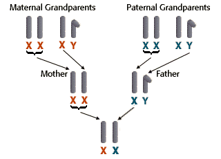

Sex-Linked Inheritance Problem Set
Problem 9: Tracing the inheritance of the human X chromosome
Tutorial to help answer the question
|
Women have sex chromosomes of XX, and men have sex chromosomes of XY.
Which of a women's grandparents could not be the source of any of the genes on either of her X-chromosomes? |
Tutorial
X chromosome inheritance

|
The X chromosomes are inherited from either maternal grandparent and paternal grandmother The diagram shows how the X and Y chromosomes are inherited from the maternal and paternal grandparents to the parents to the son. The Y chromosome is passed strictly from the father to male children in each generation. No male from the father's side of the family can be a source of genes on a women's X chromosome. |


University of Arizona
Updates: July 15, 1999
Contact the Development Team
http://www.biology.arizona.edu
All contents copyright © 1996-99. All rights reserved.